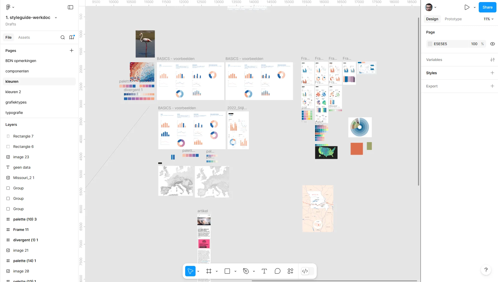
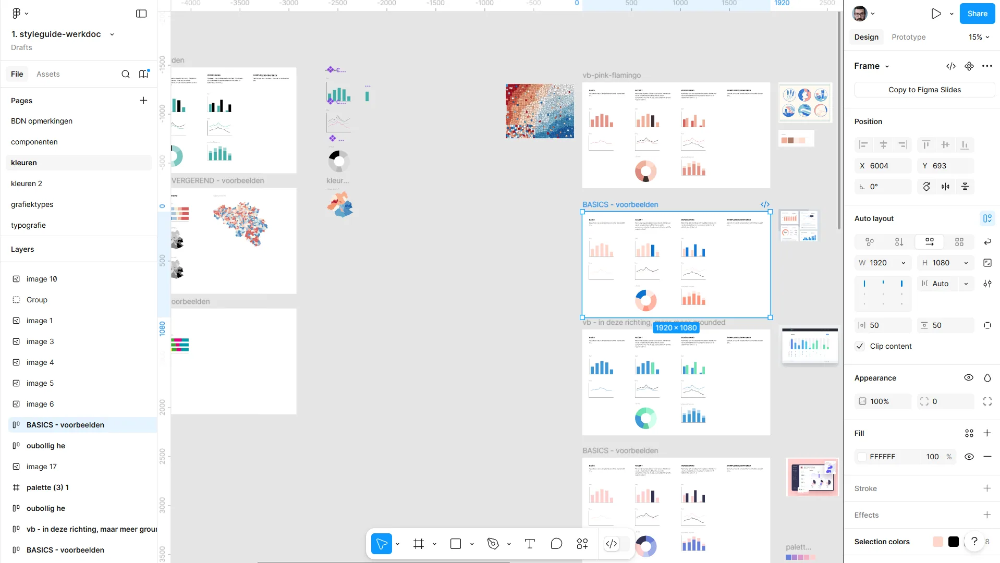
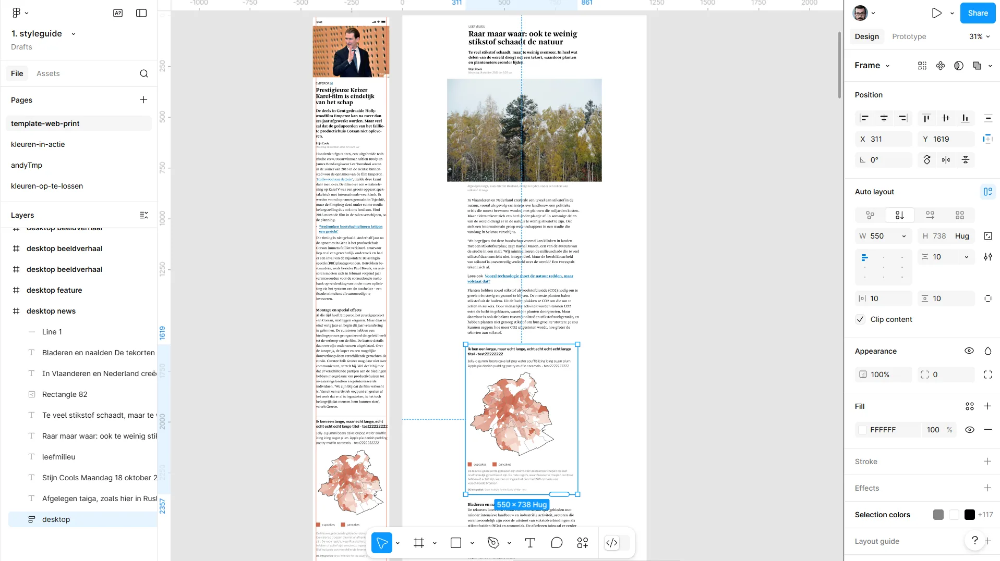

For a long time, every infographic designer more or less had their own style, and it showed. Colours differed from chart to chart, map labels from maker to maker, and there was no framework at all for digital publications.

Under the supervision of art director Gert Verbelen, we brought colour palettes, typography rules, map and chart styles and layout principles together in an online style guide: a living document the whole team uses as its daily reference.


What started as a digital initiative soon became the standard for every channel: the same visual language for web, app and newspaper. The result is not only recognisability for the reader, but also speed for the team: nobody starts from a blank page anymore.
Made with
Made by
- Tina Boeykens
- Coordination & design
- Gert Verbelen
- Art direction